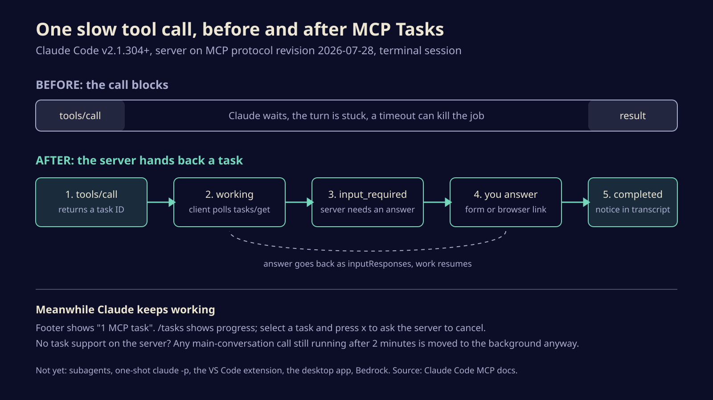

Claude Code stops waiting on slow tools: MCP Tasks and mid-job questions land in the CLI
Long MCP tool calls can now run as background tasks that report back, and servers can stop to ask you something halfway through. Here is what works today, what does not, and how to try it.

Claude Code's terminal app can now treat a slow MCP tool call as a background job instead of a wall. A server that supports the new Tasks extension hands back a task ID straight away, Claude carries on with the rest of the work, and the result turns up as a notice when the job is done. The same release lets a server pause mid-job and ask you a question, through a form in the terminal or a link that opens in your browser.
If you run anything through MCP that takes a while (a build, a deploy, a data export, a long scrape), this is the change that stops your agent from sitting there holding its breath.
What actually shipped
David Soria Parra, who co-created the Model Context Protocol at Anthropic, previewed the feature in his keynote at AGNTCon + MCPCon North America in San Jose on October 22. Anthropic's developer account said the next day that it was live in the Claude Code CLI as a public beta.
The pieces underneath are not new; the client support is. MCP's 2026-07-28 specification moved Tasks out of the experimental core and into an official extension, io.modelcontextprotocol/tasks. In that design the server decides when a call is worth turning into a task, returns a handle with a status, and the client checks on it with tasks/get. The same release replaced the old server-initiated question flow with what the spec calls multi round-trip requests: the server answers with input_required and a list of questions, and the client retries the original call with the answers attached in inputResponses.
Claude Code now speaks both. To use them you need:
- Claude Code v2.1.304 or later, in a terminal session, an Agent SDK session or a GitHub Actions run.
- A server that supports tasks and connects on protocol revision 2026-07-28. Forcing the older SDK generation or legacy protocol negotiation with environment variables rules it out.
- A session that fetches feature flags. That excludes third-party providers such as Amazon Bedrock, and setups with telemetry or flag fetching switched off.
- A call from the main conversation. Calls made inside a subagent stay plain, blocking tool calls.

The bonus most people will hit first
You do not need a task-aware server to see some of this. Claude Code now moves any main-conversation MCP call that is still running after two minutes into the background on its own. Claude gets a task ID, keeps working, and is told when the call settles.
The catch: the server still has to keep that original request open, so this does nothing for a tool running on a serverless function that gets killed at 60 seconds. For that you need real task support on the server side, with somewhere durable to keep task state.
The threshold is adjustable with CLAUDE_CODE_MCP_AUTO_BACKGROUND_MS. Set it to 0 and Claude goes back to waiting on every call, which is the safer choice if a tool's result decides what Claude should do next.
How to live with it day to day
Once a task is running, the footer shows a count such as "1 MCP task". The /tasks panel shows its latest progress. To stop one, select it there and press x, or just ask Claude to cancel it. Two quirks:
- Esc does not stop a background task. It interrupts Claude, not the server's job.
- Cancelling is a request, not a kill. Claude Code asks the server to stop, and the server may finish anyway. If the server dropped off, reconnect it from
/mcpfirst.
When a task finishes, the transcript prints a short completion line and the result goes to Claude, so ask for it if it does not come up on its own.
Questions from a server show up as a dialog. Form mode gives you fields to fill in; URL mode asks whether to open a link, which suits sign-in flows. One small trap: while /tasks is open the dialog stays hidden, so close the panel to answer. Saying no, or pressing Esc, is itself an answer that goes back to the server, which decides whether to carry on.
Where it does not work yet
Questions from a server reach you only in interactive terminal sessions. In a non-interactive run, Claude Code asks the server to cancel any task that wants input, and an October 23 update (v2.1.310) changed the timeout error so Claude is told no answer came and not to retry the same call in a loop.
Agent SDK sessions and claude -p runs that stream JSON input only get tasks when you opt in with CLAUDE_AUTO_BACKGROUND_TASKS=1, and they must keep their input open or the run will not wait for the task. A plain one-shot claude -p "do the thing" gets no tasks at all. Neither does the VS Code extension or the desktop app. Anthropic's line is that support is "rolling out to more Claude products soon", with no date attached.
If you build MCP servers
Upstash has already published a toolkit that adds tasks to an existing server, including serverless ones, with Redis as the task store so a status check does not land on an instance that never heard of the job. Either way, keep task state somewhere that outlives a single process, and only ask the user a question when the work genuinely cannot continue without one, because headless runs will cancel you for asking.
Agents spent two years learning to call tools; now the tools are learning to call back.
The bigger shift is in who sets the pace. Until now an agent and its tools moved in lockstep, and the slowest tool set the speed of the whole session. With tasks, a long job becomes something Claude can start, set aside and return to, the way a person kicks off a build and answers email while it runs. A small protocol change, with a large effect on how much you can hand an agent in one sitting.
Sources
Written with AI for Bade's Mod Shop. Facts are checked against the sources above on the day of publishing; if one is wrong, open an issue.